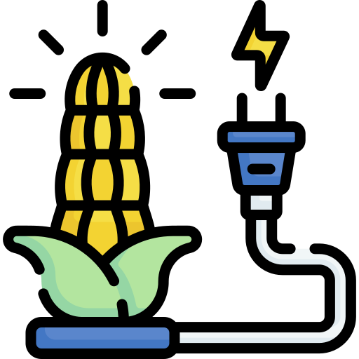
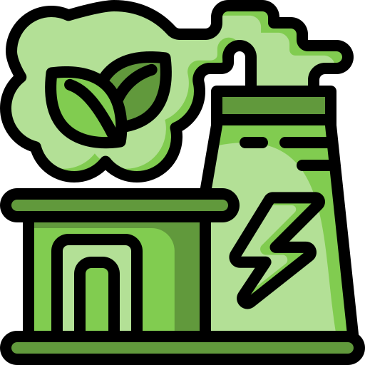
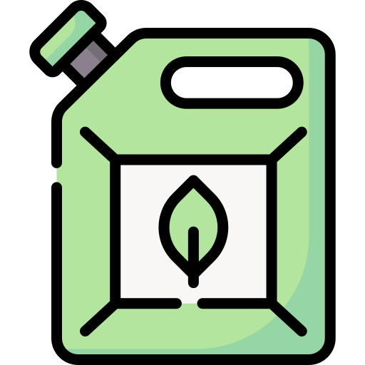
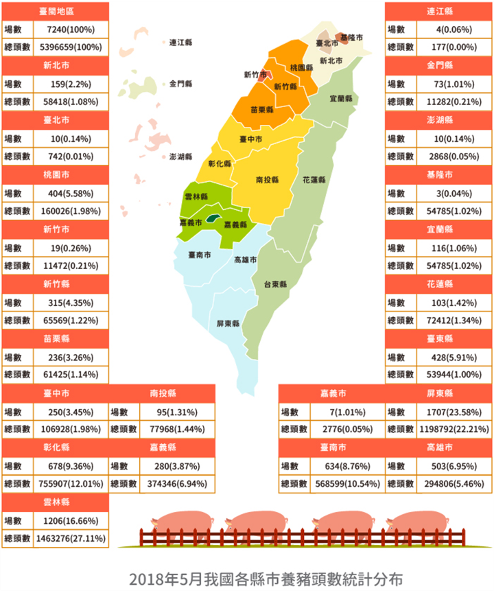
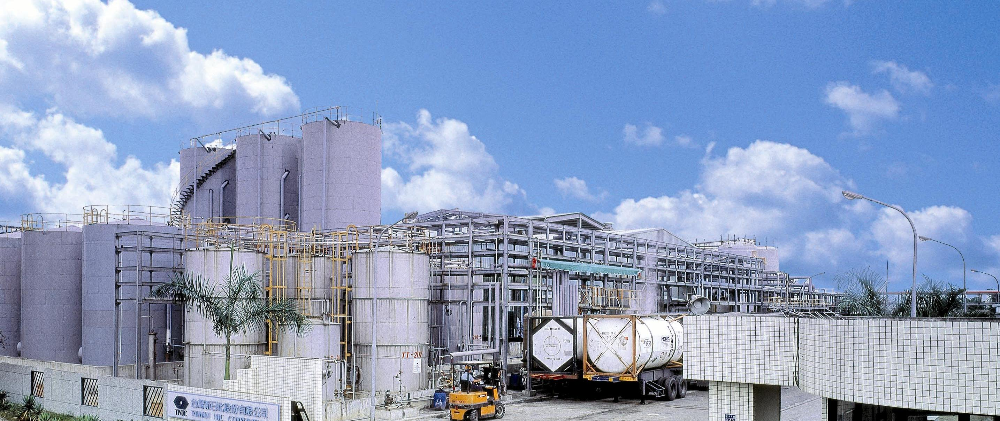
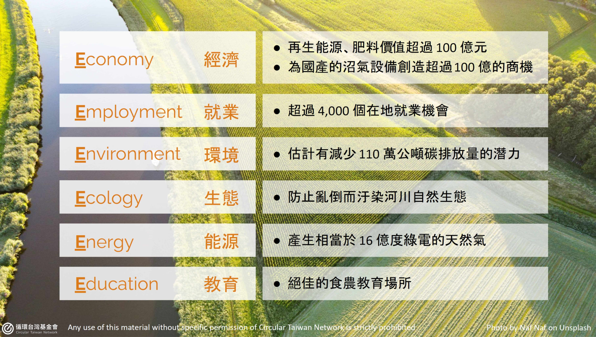

NPU of Science and Technology by MIS
為什麼選擇太陽能🤔
各能源介紹
太陽能
生質能
火力
水力
核能
風力
太陽能與其他能源比較
找尋適合的改善方法
主頁
關於我們
專題文件
專題報告
Roadster

固態生質燃料

氣態生質燃料

液態生質燃料
生質燃料
生質能分類
燃料
固態生質燃料
製材廠副產物、農業剩餘資材、城市生活廢棄物
氣態生質燃料
垃圾掩埋場、都市垃圾、畜牧業廢棄物
液態生質燃料
生質酒精、生質柴油

全國定置型生質能發電發展

生質柴油-新日化公司
經由工研院的技術輔導在2004年10月正式啟用我國首座生質柴油示範工廠，年產量可達3000公秉。

生質能帶來的「6E」效益
VoiceTube
前去網站
 NPU of Science and Technology by MIS
NPU of Science and Technology by MIS
NPU of Science and Technology by MIS
NPU of Science and Technology by MIS